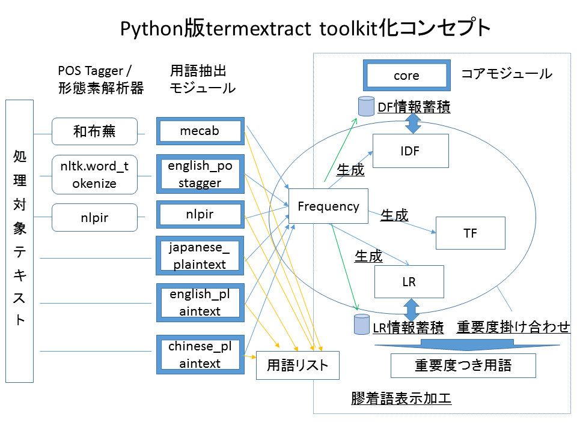

専門用語（キーワード）自動抽出Pythonモジュールtermextract【β版】
１．概要
termextractはテキストデータから専門用語を取り出すためのPython3モジュールである。
２．インストール
pytermextractを解凍し以下のコマンドを実行すること。
python setup.py install
３．コンセプト
専門用語の抽出とその重要度の計算、膠着言語（和文・中文）の整形出力処理を、複数のモジュール・関数の組み合わせで実現する。以下の図を参照のこと。

４．利用例
（１）POS Tagger・形態素解析器の出力結果を使った専門用語抽出
（２）文のストップワード分割による専門用語抽出
（３）専門用語の重要度計算の応用例
５．利用法
入出力に使用できる文字コードはUTF-8のみ。
- termextract.core - termextractの基本関数を提供
-
インターフェイスは以下のとおり。
- modify_agglutinative_lang(data)
-
半角スペースで区切られた単名詞を膠着言語（日本語等）向けに成形する
- data 【必須】
-
複合語（単名詞の空白区切り）をキーに重要度を値にしたディクショナリ
- score_lr(frequency, lr_mode, average_rate,ignore_words, dbm))
-
専門用語とそれを構成する単名詞の情報から重要度を計算する
- frequency 【必須】
-
複合語（単名詞の空白区切り）をキーに出現回数を値にしたディクショナリ
- lr_mode
-
- 1のときはLRの計算において「延べ数」をとる。
- 2のときはLRの計算において「異なり数」をとる。
- デフォルトは「延べ数」をとる。
- average_rate
-
- 重要度計算においてLRとFrequencyの比重を調整する。
- 数値が小さいほうがFRの比重が大きい。
- デフォルトは1。
- ignore_words 【推奨】
-
-
- 重要度計算の例外とする語のセット。
- 各言語抽出モジュールに設定しているIGNORE_WORDSの指定を推奨する。
- dbm
-
- LR情報を蓄積するdbmファイルを指定する。dbmファイルは、あらかじめ読み込み可能にしオープンしておく。
- 指定のない場合は、dbmの蓄積情報をLRの計算に使わない。
- store_lr()も参照のこと。
- frequency2tf(frequency)
-
Frequencyの情報から複合語（単名詞の空白区切り）をキーにTF(Term Frequency)を値にしたディクショナリを生成する。
- frequency 【必須】
-
複合語（単名詞の空白区切り）をキーに出現回数を値にしたディクショナリ
- store_df(frequency, dbm)
-
Frequencyの情報から複合語（単名詞の空白区切り）をキーにDF(Document Frequency)の情報をdbmに蓄積する。
一回の関数呼び出しを一回の文書読み込みとみなす。
- frequency 【必須】
-
複合語（単名詞の空白区切り）をキーに出現回数を値にしたディクショナリ
- dbm 【必須】
DF情報を蓄積するdbmファイルを指定する。dbmファイルは、あらかじめ書き込み可能にしオープンしておく。
例
import dbm
db = dbm.open("terextract", "c")
termextract.core.store_df(frequency, dbm=db)
- get_idf(words, dbm)
-
複合語（単名詞の空白区切り）のIDF(Inverted Document Frequency)を取り出す。戻り値は複合語（単名詞の空白区切り）をキーに、IDF情報を値にしたディクショナリ
- words 【必須】
-
複合語（単名詞の空白区切り）をキーにしたディクショナリ、もしくはセット。ディクショナリの値は無視される。
- dbm 【必須】
-
DF情報を蓄積するdbmファイルを指定する。dbmファイルは、あらかじめ読み込み込み可能にしオープンしておく。
- store_lr(frequency, dbm)
-
Frequencyの情報から複合語（単名詞の空白区切り）を元にLR(単名詞の左右の連接情報）をdbmに蓄積する。
- frequency 【必須】
-
複合語（単名詞の空白区切り）をキーに出現回数を値にしたディクショナリ
- dbm 【必須】
-
DF情報を蓄積するdbmファイルを指定する。dbmファイルは、あらかじめ書き込み可能にしオープンしておく。
- term_importance(dict_1, dict_2, ..., dict_n)
-
複数の重要度情報を組み合わせ（乗算し）、複合語（単名詞の空白区切り）をキーに重要度を値にしたディクショナリを返す。
- dict_1～dict_n 【必須】
-
複合語（単名詞の空白区切り）をキーに重要度を値にしたディクショナリ。
- termextract.mecab - 「和布蕪」ベースの専門用語抽出
-
和文の形態素解析ソフトである和布蕪の形態素解析結果を受け取り、複合語（空白区切りの単名詞）のリストか、ディクショナリ（複合語をキー、複合語の出現回数を値）を返す。
インターフェイスは以下のとおり。
- cmp_noun_list(data)
-
複合語（単名詞の空白区切り・出現順）をリストで返す。
- cmp_noun_dict(data)
-
複合語（単名詞の空白区切り）をキーに、その出現回数を値にしたディクショナリを返す。
- IGNORE_WORDS
-
重要度計算外にする推奨の単名詞のセットを返す
termextract.english_posagger - nltk.pos_tabベースの専門用語抽出
- 英文POS Taggerであるnltkのpos_tagの結果を受け取り、複合語（空白区切りの単名詞）のリストか、ディクショナリ（複合語をキー、複合語の出現回数を値）を返す。
- インターフェイスはtermextract.mecabと同じ。
termextract.nlpir - NLPIRベースの専門用語抽出
- 中文の形態素解析ソフトであるnlpir(ICTCLAS)の結果を受け取り、複合語（空白区切りの単名詞）のリストか、ディクショナリ（複合語をキー、複合語の出現回数を値）を返す。
- インターフェイスtermextract.mecabと同じ。
termextract.english_plaintext - 英文ストップワード方式の専門用語抽出
- 英文のプレインテキストを受けとり、複合語（空白区切りの単名詞）のリストか、ディクショナリ（複合語をキー、複合語の出現回数を値）を返す。
- インターフェイスはtermextract.mecabと同じ。
- 複合語の切り出しはモジュール内指定のストップワードによる文の分割。
termextract.japanese_plaintext - 和文ストップワード方式の専門用語抽出
- 和文のプレインテキストを受けとり、複合語（空白区切りの単名詞）のリストか、ディクショナリ（複合語をキー、複合語の出現回数を値）を返す。
- インターフェイスはtermextract.mecabと同じ
- 複合語の切り出しは「ひらがな」「記号」による文の分割。
termextract.chinese_plaintex - 中文ストップワード方式の専門用語抽出
- 中文のプレインテキストを受けとり、複合語（空白区切りの単名詞）のリストか、ディクショナリ（複合語をキー、複合語の出現回数を値）を返す。
- インターフェイスはtermextract.mecabと同じ。
- 複合語の切り出しはモジュール内指定のストップワードによる文の分割。
６．オリジナルTermExtractとの違い
（１）言語
オリジナルのTermExtractはPerl ver 5のモジュールとして提供されている。
このpytermextractはPython3のパッケージである。
（２）文字コード
Python3の標準文字コードに合わせ、入出力をUTF-8に限定
（３）オブジェクト指向から関数の提供へ
応用可能性を広げるため、関数を組み合わせて利用できるようにした。
（４）Pyhonの形態素解析・POS Taggerとの連携
１）nltkの英文POS Taggerとの連携
２）ICTCLASSのPythonパッケージnipirとの連携
（５）和文ストップワード方式
「カタカナ・漢字抽出方式」ではなく、「ひらがな・記号」によるストップワード方式にした。これはUTF-8化により切り出すべき対象漢字の増加に対応したものである。
（６）機能の実装
オリジナル版にあるパープレキシティによるLR計算は未実装である。
機能及びインターフェイスは、予告なく変更される可能性がある。
（７）パラメータの調整
重要度計算対象外にする語の変更など、パラメータの調整を行った
７．α版との違い
（１）モジュール名及び関数名の変更
Python推奨のスタイルに合わせ名称を変更した。
（２）重要度計算処理手順の変更
α版ではFLR(Frequency × LR)による重要度を関数calc_impにパラメータを与えることで算出した。
β版では各重要度計算方式による用語と重要度のディクショナリを組み合わせることにより、最終的な重要度を出力する。
（３）TF・IDF・LRによる重要度計算の追加
TF・IDF・LRの重要度をFrequency（用語とその頻度のディクショナリ）からそれぞれ算出できるようにした。
IDFの算出のためDF情報をdmbに蓄積し、その蓄積データから用語のセット、もしくはディクショナリを渡すことで、指定の用語のIDFを取り出せるようにした。
（４）LRの情報蓄積とその取り出しを追加した
LR情報をdmbに蓄積し、その蓄積データから用語のセット、もしくはディクショナリを渡すことで、指定の用語のLRを取り出せるようにした。
（５）ストップワード方式による用語抽出の追加
英文・和文・中文それぞれのストップワード方式による用語抽出モジュールを追加した。
（６）IGNORE_WORDSの変数名大文字化とセット化
α版のignore_wordsの変数名を定数であることから大文字化した。
また処理速度の向上のためリストからセットに変更した。
（８）バグの修正
α版にあるバグのいくつかを修正した
８．Copyright
「専門用語自動抽出システム」は 東京大学情報基盤センター図書館電子化部門中川裕志教授および 横浜国立大学環境情報研究院森辰則助教授が共同で開発したものです。
pytermextractは主として中川教授、 東京大学前田朗、 東京大学小島浩之講師の３者で検討を重ね、この「専門用語自動抽出システム」を改良したものである。
Python版termextractの配布パッケージに含む以下のサンプルデータはWikipedia(CC-BY-Sa)記事を元にしている。
９．免責
本プログラムの使用において生じたいかなる結果に関しても当方では
一切責任を負わない。